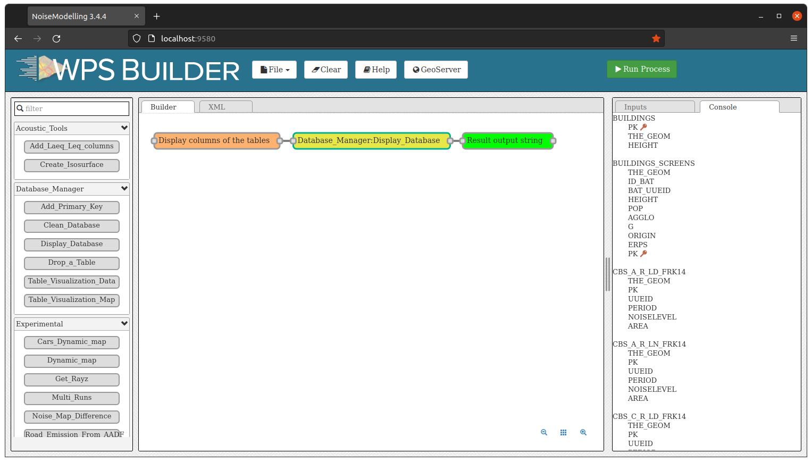
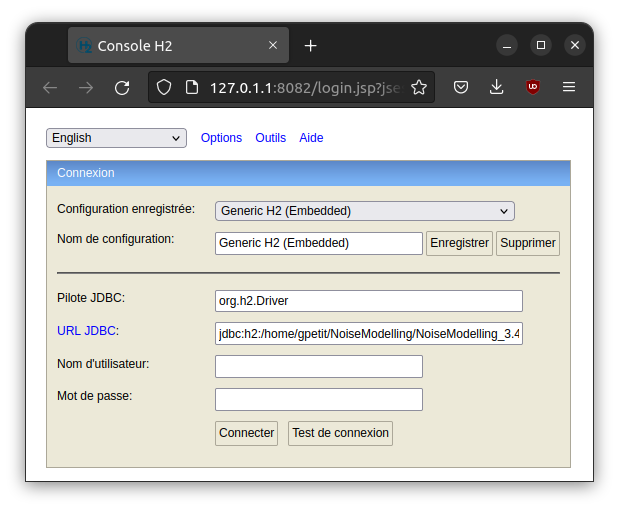
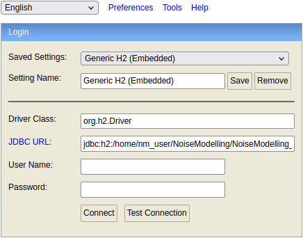
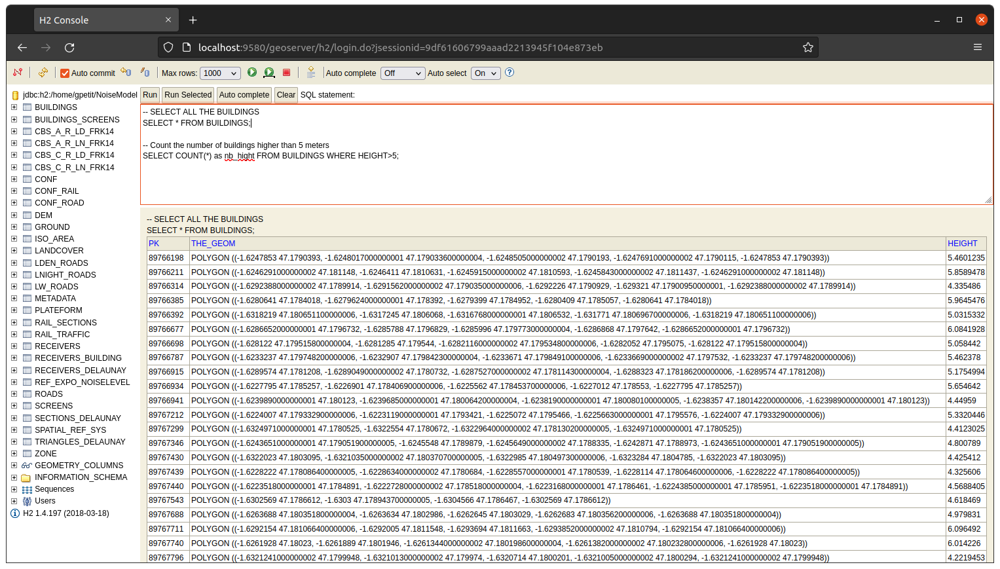
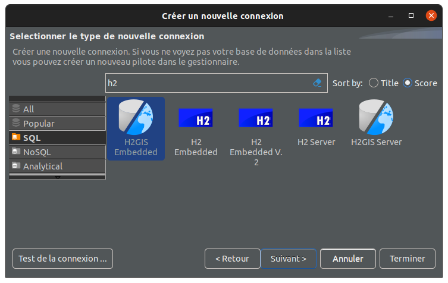
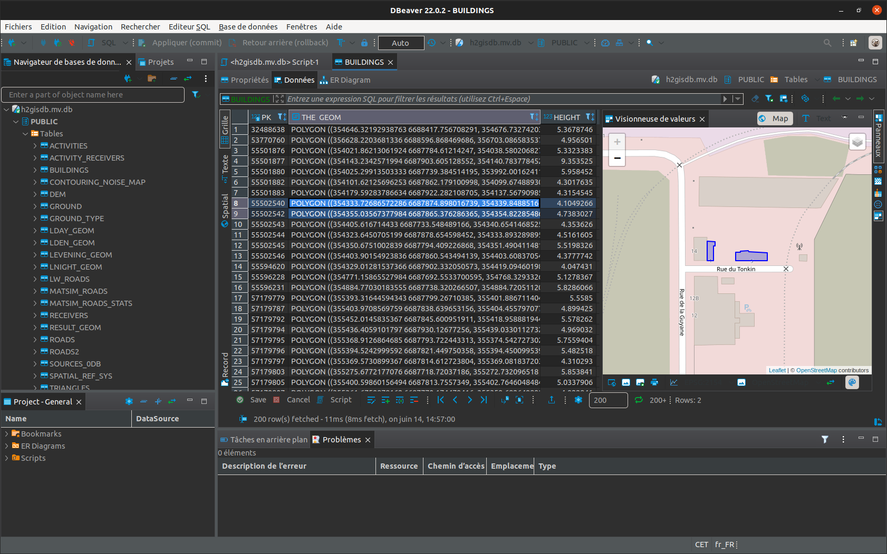

Access NoiseModelling database
Introduction
NoiseModelling has been preconfigured to use H2 / H2GIS as the default database (to store and manage all the needed data).
This database does not need to be configured or installed on the system. It’s transparent to users.
Tip
Many spatial processing are possible with H2GIS. Please have a look to the numerous functions on the H2GIS website.
To visualize and manage NoiseModelling data (e.g roads, buildings or landcover layers) you have the choice between the three following approaches (listed from simple to advanced):
Use WPS blocks (inside)
Use H2/H2GIS web client
Use DBeaver client
1. Use WPS blocks
Once NoiseModelling UI is launched (open http://localhost:9580/ in your web browser), you can manage your data thanks to the Database_Manager WPS blocks folder (on the left side). In particular, you can do these actions:
Add_Primary_Key: allows to add a primary key on a column of a specific layer (table)Clean_Database: remove all the layers (tables) from NoiseModelling (can be useful when starting a new project)Display_Database: list all the layers (tables) and the columns insideDrop_a_Table: remove the selected layer (table) from NoiseModellingTable_Visualization_Data: display the layer (table) as an array of valuesTable_Visualization_Map: if the layer (table) is geographic (contains geometry(ies)), display the data in a map
Below is an illustration with the Display_Database WPS block
{kind=link}

2. Use H2/H2GIS web client
If you want to have full capabilities on visualization, edition and processing on data, you may need to connect to the database thanks to the H2/H2GIS web interface.
To do so, follow these steps:
download the H2/H2GIS v.2.0 database client (which is used with NoiseModelling 4.0)
unzip the
h2gis-dist-2.0.0-bin.zipfilein the
/h2gis-standalone/folder, double-click on theh2gis-dist-2.0.0-SNAPSHOT`.jarfile to launch the web client (depending on your Operating System, you may need to allow the execution of this file)the H2/H2GIS web client should be opened in your default web browser (the URL looks like this
http://127.0.1.1:8082/login.jsp?jsessionid=08ef3ad5d6838b614cf91b42e10bca8f)
{kind=link}

In the connexion panel, you have to specify the following informations:
Driver Class: the driver that allows to connect to a specific database. Here we want to connect to a H2 db, so let the default valueorg.h2.DriverJDBC URL: the JDBC address of the NoiseModelling database. By default, this database is placed in here/.../data_dir/h2gisdb.mv.db. So, fill this text area withjdbc:h2:/.../data_dir/h2gisdb.mv.db.User name: the db user name. By default, keep the empty valuePassword: the db password. By default, keep the empty value
Warning
If you want to open the database while NoiseModelling is running, you have to add ;AUTO_SERVER=TRUE after the JDBC URL. If not, you will only be able to open the database once NoiseModelling is closed.
Below is an example, with a database located on the computer here: /home/nm_user/NoiseModelling/NoiseModelling_4.0/data_dir/h2gisdb.mv.db. We want to open the db while NoiseModelling is running.
JDBC URL:jdbc:h2:/home/nm_user/NoiseModelling/NoiseModelling_4.0/data_dir/h2gisdb.mv.db;AUTO_SERVER=TRUEUser name: emptyPassword: empty
{kind=link}

Warning
The URL is here adapted to Linux or Mac users. Windows user may adapt the address by replacing / by \ and the drive name.
Once done, click on Connect
In the new interface, you discover a full database manager, with the list of tables on the left side, a SQL console (where you can execute all the instructions you want, independently of NoiseModelling) and a result panel.
{kind=link}

3. Use DBeaver client
DBeaver is a free and open-source universal SQL / database client for developers and database administrators. DBeaver is able (among others) to connect to H2/H2GIS database or to PostgreSQL/PostGIS.
You can download DBeaver on this webpage.
Connect DBeaver to your database
Run DBeaver
Add a new connection
If you use a H2GIS type databse, please select
H2GIS embedded(use the search engine to filter)Point the database path by clicking on
Browse .... By default the database is placed in theNoiseModelling/data_dirdirectory and is namedh2gisdb.mv.db.In the
Pathtext area, remove.mv.dbat the end of the addressIf you want to open the database while NoiseModelling is running, add
;AUTO_SERVER=TRUEat the end of the path (you should have something like this/home/nm_user/NoiseModelling/NoiseModelling_4.0/data_dir/h2gisdb;AUTO_SERVER=TRUE)Click on
Terminateto open your dabatase!
{kind=link}

Warning
If you are using a version of DBeaver prior to 22.0.4, the interface may ask you to Save instead of Opening the existing db. Once you click on Save, a panel will warns you that h2gisdb.mv.db already exists and will ask you if you want to Cancel or Replace : click on Replace.
Now you can use the full potential of DBeaver and the H2GIS database. You can explore, display and manage your database.
{kind=link}
